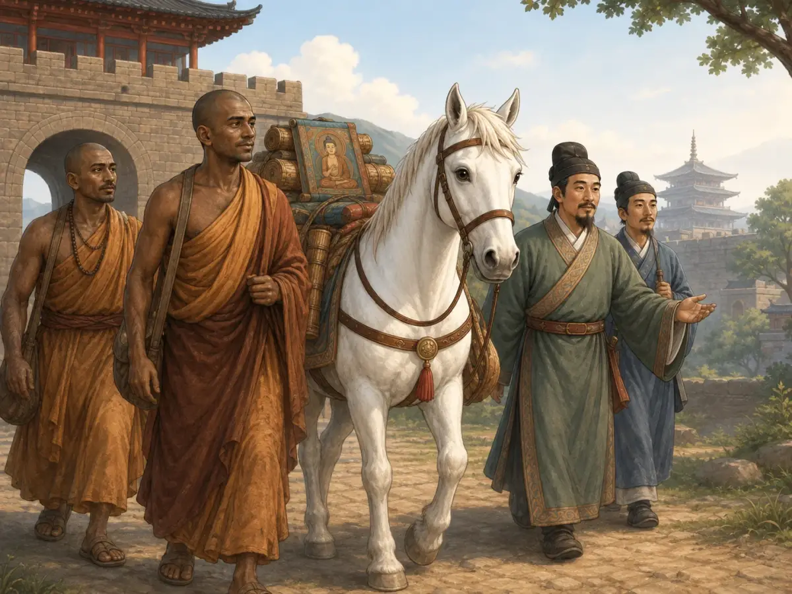

佛教怎样来到中国？白马寺的传说
How Did Buddhism Come to China? The White Horse Story
Page 1
皇帝做了一个梦
The Emperor's Dream
将近两千年前，中国正处在汉朝。一天早晨，汉明帝醒来后，还清楚地记得昨夜的梦。他梦见一位金光闪闪的人飞进宫殿，身边的光像太阳一样明亮。
“那是谁？”皇帝问大臣们。
一位大臣说：“您梦见的也许是佛陀。”
佛陀是生活在古代印度的一位老师。他的教导后来发展成佛教，鼓励人们了解痛苦、关爱生命，也学习让自己的心平静下来。
一个著名传说说，汉明帝听完以后，便派人向西出发，寻找关于佛陀的更多消息。
Nearly two thousand years ago, China was ruled by the Han dynasty. One morning, Emperor Ming woke with a strange dream still bright in his mind. A golden man had flown into the palace, shining like the sun.
“Who was he?” the emperor asked his advisers.
One adviser answered, “Perhaps you dreamed of the Buddha.”
The Buddha was a teacher who had lived in ancient India. His teachings became Buddhism, a religion that encourages people to understand suffering, care for living things, and learn to calm the mind.
A famous legend says that Emperor Ming sent travelers west to learn more about him.
Page 2
一匹白马走进洛阳
A White Horse Enters Luoyang

In the legend, two monks arrive in Luoyang with a white horse carrying a Buddhist image and rolled-up books.
传说继续讲道，皇帝派出的人终于回来了。两位僧人和他们一起来到洛阳。这是汉朝的都城，也是皇帝居住和处理国家大事的地方。
走在队伍中间的是一匹白马。它背上驮着佛像和写满佛教教导的书卷。一路走来，它已经越过了遥远的山脉和荒野。
皇帝欢迎了两位僧人，并让人为他们修建一座寺院。为了纪念那匹走了很远路的马，人们把寺院叫作白马寺。
这个传说不一定和当年发生的事情一模一样。不过，它让一匹安静的白马，成了人们讲述佛教来到中国时最难忘的形象。
The legend continues with the travelers returning at last. Two Buddhist monks came with them to Luoyang, the Han capital where the emperor lived and ruled.
In the middle of the group walked a white horse. On its back were a picture of the Buddha and rolled-up books filled with Buddhist teachings. The horse had carried them across distant mountains and dry lands.
The emperor welcomed the monks and had a temple built for them. To honor the animal that had made the long journey, people called it White Horse Temple.
The legend may not match every detail of what really happened. Still, its quiet white horse became an unforgettable picture in the story of Buddhism's arrival in China.
Page 3
佛教在中国扎下了根
Buddhism Takes Root in China
现实中，佛教并不是只靠一匹马、一次旅行就传进中国的。僧人、商人和旅行者从古代印度和中亚带来了佛教的教导。这样的旅程持续了许多年。
刚开始，佛像、僧衣和佛教故事对许多中国人来说都很陌生。后来，人们建起有中国屋顶的佛寺，在山崖上雕刻佛像，还画出了观音 - 一位会倾听并帮助受苦之人的佛教人物。这个从远方来的宗教，渐渐有了人们熟悉的中国面貌。
佛教也走进了中国的故事。《西游记》里的唐僧为什么要走那么远？他要去寻找佛教经书。少林寺为什么会有和尚？因为它在有武功以前，首先是一座佛教寺院。白马寺的传说是故事的开头，后来发生的事却远远超过了一匹马和一次旅行。
In real life, Buddhism did not enter China on one horse in a single trip. Monks, merchants, and other travelers carried Buddhist teachings from ancient India and Central Asia. These journeys continued for many years.
At first, Buddhist images, monks' robes, and stories seemed new to many people in China. Later, builders raised Buddhist temples with Chinese roofs. Artists carved Buddhas into cliffs and painted Guanyin, a Buddhist figure who hears and helps people in pain. A religion from far away began to look and feel at home in China.
Buddhism also entered stories that children still know. Why does the Tang Monk travel so far in Journey to the West? He is searching for Buddhist writings. Why are there monks at Shaolin Temple? Because Shaolin was a Buddhist temple long before it became famous for kung fu. The White Horse legend tells the beginning, but the story soon grew much larger than one horse and one journey.
Page 4
今天仍然看得见
Still Part of China Today

White Horse Temple is still a Buddhist temple and a place where visitors remember the old legend.
今天的白马寺里，院中仍能看到白马石像。僧人住在寺中，游客从红色殿门前走过，香炉中升起细细的烟。院子里的白马仍让人想起那个古老的传说。
佛教仍是中国传播最广、影响最深的宗教传统之一。有些人把自己看作佛教徒。有些人只是来点一炷香，在观音像前许下心愿，或找一个安静的地方坐一会儿。还有人来到寺院，是为了看古老的建筑，听一听钟声。
佛教开始于古代印度，来到中国已经将近两千年。如今，它已经成为中国故事的一部分。
At White Horse Temple today, stone horses still stand in the courtyard. Monks live inside the temple. Visitors pass through red gates, and a thin ribbon of smoke rises from the incense burner. The white horses still remind people of the old legend.
Buddhism remains one of China's most widespread and influential religious traditions. Some people call themselves Buddhist. Others simply come to light incense, make a wish before a figure of Guanyin, or sit quietly for a while. Some visit to see the old buildings and hear the temple bells.
Buddhism began in ancient India and reached China nearly two thousand years ago. It has since become part of China's own story.